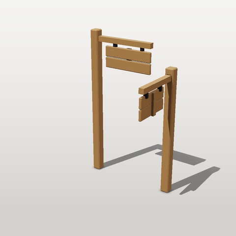

Composition: components, nested components and asset instances
Four reuse levels, built up in one project: a component, a component made of components, an
asset that uses it (with measure: and a hinge), and an asset made of assets. Every block below runs as written.

1. A component
A component is a sub-assembly with public params and material slots. It is not an asset: it has no budget and cannot be exported alone.
# file: components/plank.yaml
shapewright: 0.1
component: plank
doc: One chamfered board. Material slot `wood`.
params:
length: {value: 0.6}
width: {value: 0.12}
t: {value: 0.03}
parts:
board:
shape: {type: chamfer_box, size: [length, width, t], chamfer: 0.006}
material: wood
2. A component made of components
sign_board places two plank instances and a batten. Nested parts are named <instance>_<part>
(top_board), and a sibling can attach to them (attach: {to: top}). Material slots map outward: the plank's
wood becomes the sign's wood.
# file: components/sign_board.yaml
shapewright: 0.1
component: sign_board
doc: A sign of two planks on a back batten (a component made of components). Material slot `wood`.
params:
length: {value: 0.6}
parts:
top: {component: plank, with: {length: length}, materials: {wood: wood}, position: [0, 0.065, 0]}
bottom: {component: plank, with: {length: length}, materials: {wood: wood}, position: [0, -0.065, 0]}
batten:
shape: {type: box, size: [0.05, 0.25, 0.025]}
anchor: front
attach: {to: top, at: back, offset: [0, -0.065, 0]}
material: wood
3. An asset that uses it, with measure: and a hinge
The sign is placed against the arm as built (measure: {a: {bounds: arm}}), so changing height or
sign_length moves it with no hand-derived numbers. pivot: top makes the whole sign one node hinged at its top
edge, ready to swing in an engine. The iron straps make sure it touches the arm: a sign 4 cm under the arm with
nothing holding it is ASM_FLOATING_PARTS, an error.
# file: assets/signpost/asset.yaml
shapewright: 0.1
asset: {name: signpost, kind: prop/sign, description: A post with a hinged two-plank sign.}
budget: {triangles: 1500}
materials:
oak: {base_color: "#8a6a48", roughness: 0.85}
iron: {base_color: "#4a4d52", roughness: 0.5, metallic: 1}
params:
height: {value: 1.8, min: 1.2, max: 2.4}
sign_length: {value: 0.6, min: 0.4, max: 0.9}
parts:
post: {shape: {type: chamfer_box, size: [0.1, height, 0.1], chamfer: 0.01}, anchor: bottom, material: oak}
arm: {shape: {type: box, size: [sign_length + 0.1, 0.06, 0.06]}, anchor: left, position: [0.05, height - 0.1, 0], material: oak}
sign:
component: sign_board
with: {length: sign_length}
materials: {wood: oak}
measure:
a: {bounds: arm}
anchor: top
position: [a.center.x + 0.05, a.min.y - 0.04, 0]
pivot: top
hanger:
doc: two iron straps from the arm down into the sign (the sign must not float)
measure:
a: {bounds: arm}
shape: {type: box, size: [0.03, 0.075, 0.04]}
anchor: top
position: [a.center.x + 0.05 - 0.3 * sign_length, a.min.y + 0.01, 0]
array: {count: 2, offset: [0.6 * sign_length, 0, 0]}
material: iron
sockets:
lamp: {attach: {to: arm, at: right}, doc: hang a lantern here}
# run
sw validate signpost
sw validate signpost --set height=2.2,sign_length=0.85
4. An asset made of assets
asset: places a whole asset. with: sets its params, so one source gives two different posts. Parts are
named <instance>_<part> (east_sign_top_board), and the signpost's lamp socket comes along as north_lamp
and east_lamp, turned with the instance.
# file: assets/crossing/asset.yaml
shapewright: 0.1
asset: {name: crossing, kind: prop/sign, description: Two signposts at a crossing.}
budget: {triangles: 3000}
parts:
north: {asset: signpost, position: [-0.5, 0, 0]}
east: {asset: signpost, with: {height: 1.5, sign_length: 0.45}, rotate: [0, -90, 0], position: [0.5, 0, 0]}
# run
sw validate crossing
sw stats crossing
sw render crossing --mode beauty --size 320
Guards you will meet: a with: key the asset does not have is SRC_REF (with a suggestion), a pack param in
with: is PACK_OVERRIDE (pack params are the same for every member), two assets with the same material name
but different definitions is MATERIAL_CONFLICT (map one with materials:), and nesting stops at 4 levels.
The full reference is the Composition section of
ASSET_FORMAT.md.